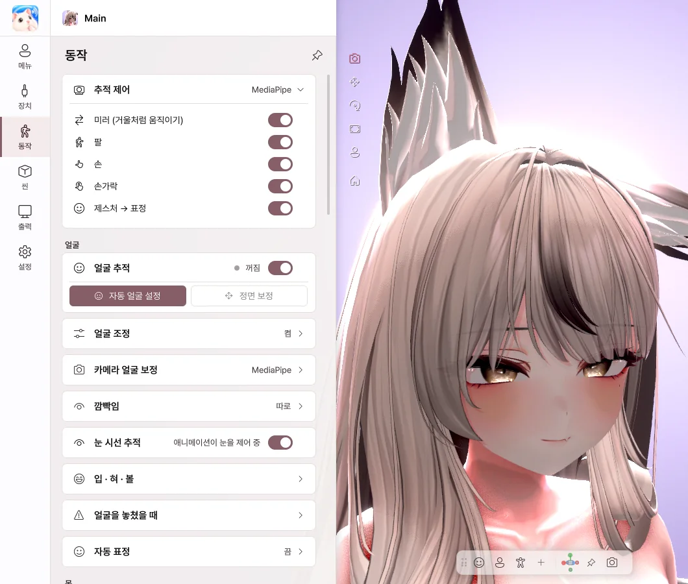
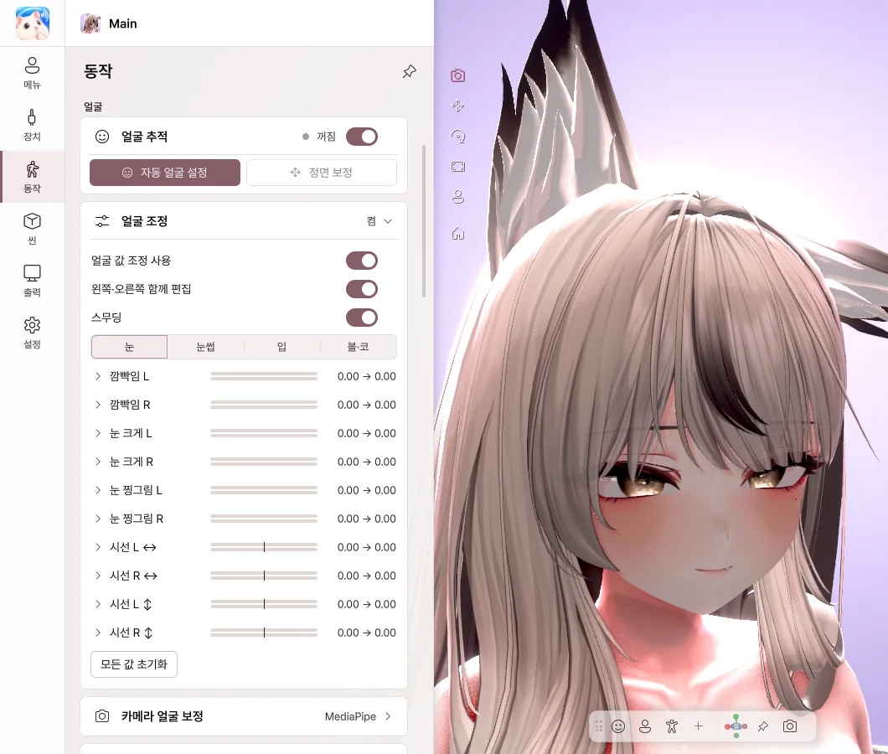
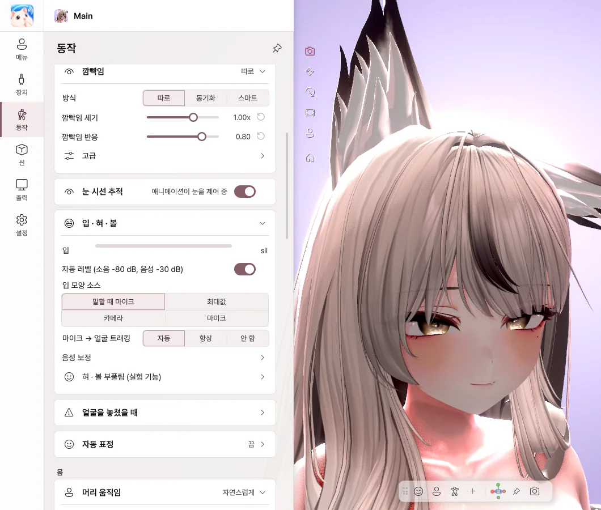
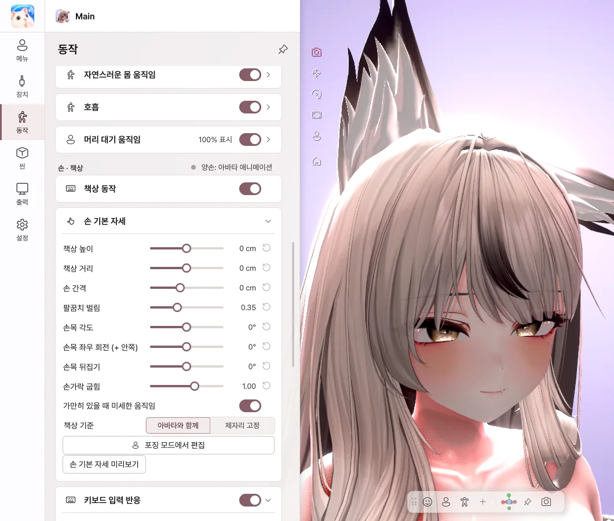

7. 동작
얼굴, 몸, 손이 어떻게 움직일지 정합니다. 설정은 아바타마다 따로 저장됩니다.
얼굴 트래킹

- 미러 — 거울처럼 같은 쪽으로 움직입니다.
- 팔 · 손 · 손가락 — 웹캠으로 각 부위를 움직입니다.
- 제스처 → 표정 — 손 모양에 맞춰 아바타 표정이 바뀝니다.
- 얼굴 추적 — 얼굴 표정 트래킹을 켜고 끕니다.
자동 얼굴 설정

자동 얼굴 설정 버튼을 누르면 캘리브레이션이 시작됩니다. 화면 안내에 따라 표정을 짓고 측정을 눌러 주세요. 마지막에 적용을 누르면 내 얼굴에 맞게 표정이 조정됩니다.
첫 단계에서 바라보는 곳이 아바타의 정면 시선이 됩니다. 방송할 때처럼 화면을 바라봐 주세요.
얼굴 조정

- 눈, 눈썹, 입, 볼 표정이 얼마나 크게 나올지 하나씩 조절합니다.
- 슬라이더를 오른쪽으로 당기면 그 표정이 더 크게 나옵니다.
- 왼쪽 · 오른쪽 함께 편집을 켜면 양쪽이 같이 바뀝니다.
- 스무딩을 켜면 표정 떨림이 줄어듭니다.
깜빡임 · 입

- 깜빡임 방식 — 따로는 윙크가 잘 되고, 동기화는 두 눈이 함께 감깁니다.
- 눈 시선 추적 — 눈동자가 내 시선을 따라갑니다.
- 자동 레벨 — 목소리 크기에 맞춰 입 크기를 자동으로 맞춥니다.
- 음성 보정 — 모음 버튼을 누르고 발음하면 내 목소리에 맞춰집니다.
- 혀 · 볼 부풀림 — 버튼이나 단축키로 혀를 내밀거나 볼을 부풀립니다.
몸

- 머리 움직임 — 작게 · 자연스럽게 · 크게 중에서 고릅니다.
- 몸 따라오기 — 머리를 돌리면 몸도 자연스럽게 따라옵니다.
- 자연스러운 몸 움직임 · 호흡 — 가만히 있어도 살아 있는 것처럼 움직입니다.
손 · 책상

- 책상 동작 — 손이 카메라에 보이지 않을 때 키보드와 마우스에 맞춰 아바타 손이 움직입니다.
- 손 기본 자세 — 책상 높이, 손 간격, 손목 각도를 맞춥니다.
- 키보드 · 마우스 입력 반응 — 타이핑과 마우스 움직임의 크기를 정합니다.
키보드 입력은 아바타 손을 움직이는 데만 쓰이며, 입력한 글자는 저장하거나 전송하지 않습니다.
💡 혀 · 볼 부풀림의 카메라 감지는 실험적 기능입니다.